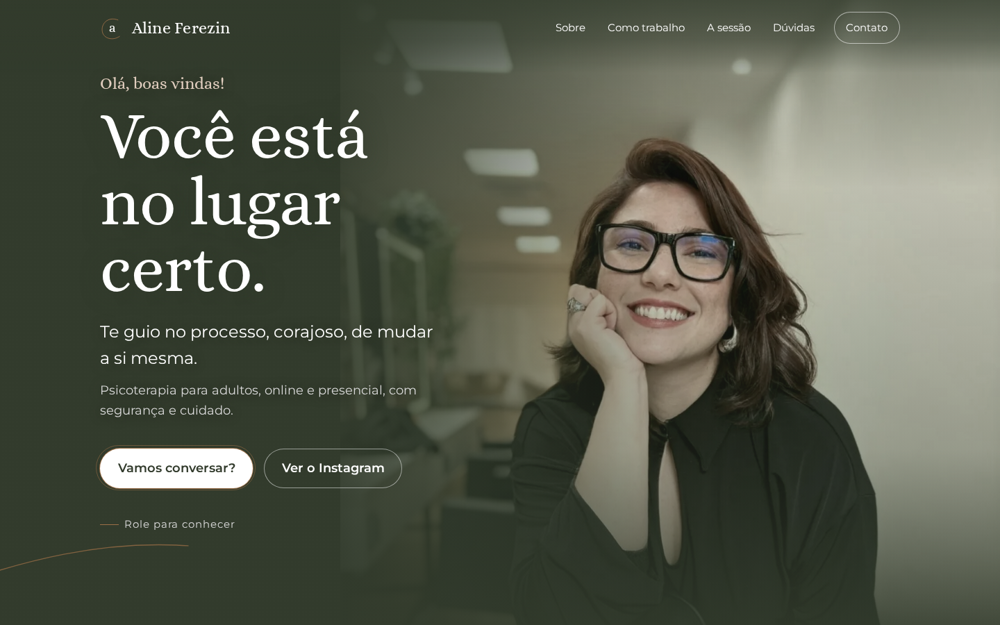
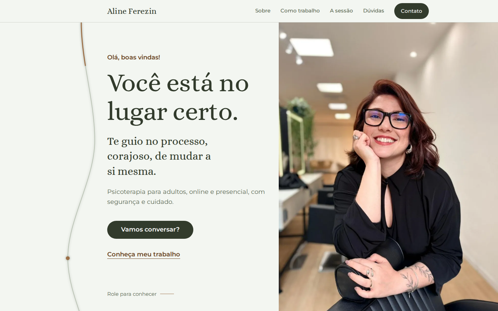
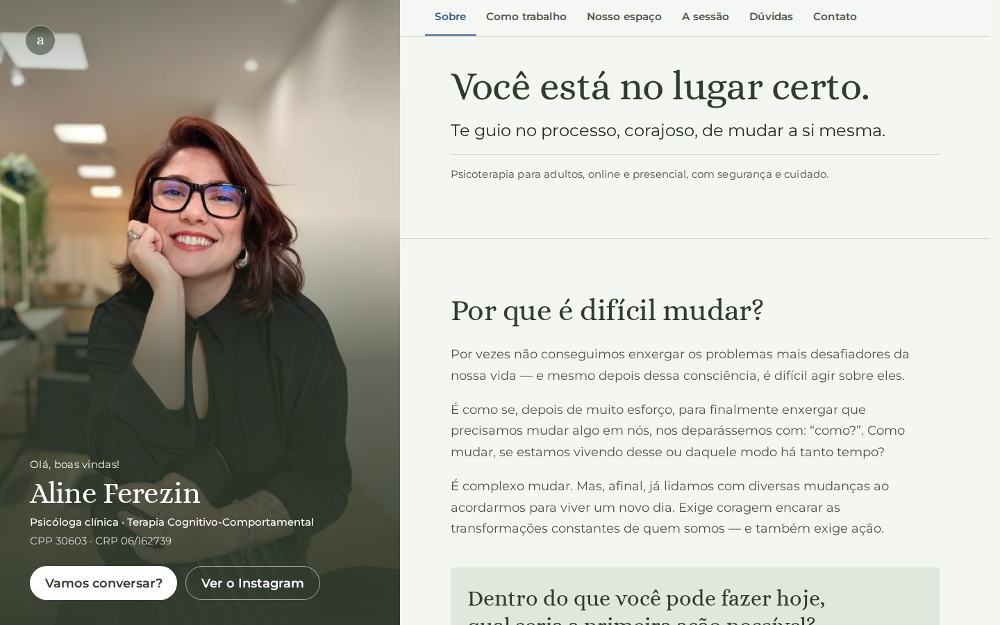
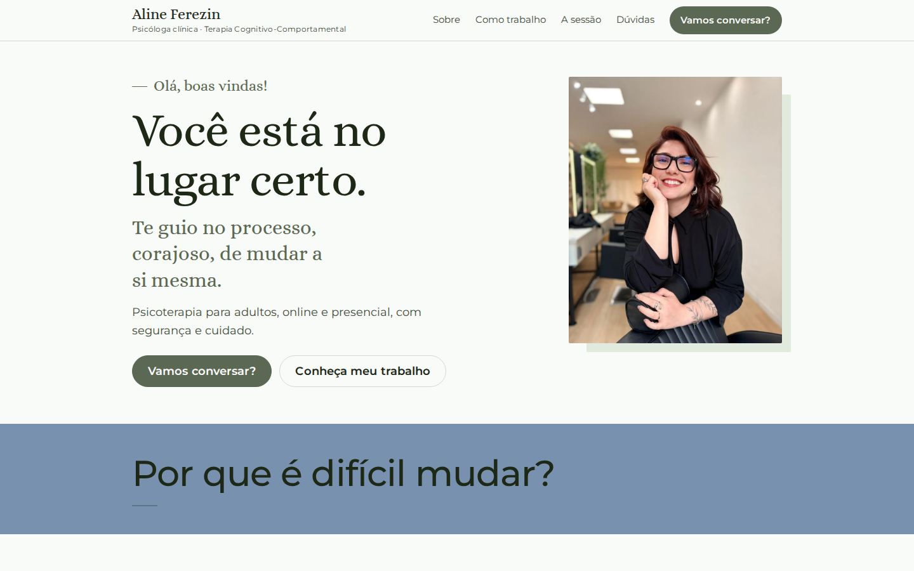
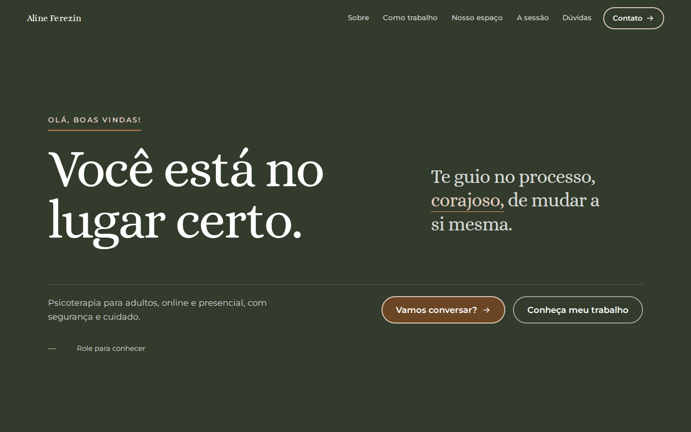

Aline — cada link abaixo é um site inteiro, funcionando, no celular e no computador. Mesmo conteúdo, mesma marca; cinco jeitos diferentes de te apresentar.
Abra, role até o fim, e me diga qual te representa. Dá pra misturar: “gostei do começo da 2 com a foto da 4”.

V1Verde da sua marca por toda a tela, sua foto grande logo de cara. Quente, íntimo, direto ao “você está no lugar certo”.

V2Claro e arejado. A página é um percurso: uma linha conduz o visitante da dúvida (“por que é difícil mudar?”) até o primeiro passo.

V3Sua foto fica fixa ao lado enquanto o conteúdo passa. Silencioso, organizado, com a sensação de já estar sentado na sala.

V4A página conversa: as perguntas de quem chega, respondidas pela sua voz. Muito ar, texto grande, o azul da marca conduzindo.

V5A mais ousada. Grandes blocos, tipografia forte e o Guimarães Rosa no centro: “o que ela quer da gente é coragem”.